MATHEMATICAL MODELING · 方法论速通
数学建模
不讲每道题怎么算，只讲「遇到问题该怎么办」
线性规划 线性化 整数性
凸性 最优性证明 灵敏度 验证
配套工程：math_modeling_learn/ —— 16 个例题脚本全部与书中答案自动比对通过
封面
先有这张地图，后面七招才有地方放。
一句话
把一个说不清的现实问题，翻译 成数学（一个能算的模型），
算出结果后再翻译 回现实，并且证明 这个结果靠得住。
现实问题
「怎么安排才划算」
数学模型
变量 / 目标 / 约束
解
一个数 / 一组方案
决策
「该怎么做」
验证
回环
验证不通过 → 回到「数学模型」重想
绝大多数人的作业停在「解」这一步——右边两格才是建模的产出
例 题
那三道题的完整题干在哪
① 例 3.10 飞行管理 （书上的答案不满足它自己的约束）→ 完整题干见武器七 ；
② 例 3.9 两料场选址 （书上的连续解是局部最优）→ 完整题干见武器四 ；
③ 例 2.9 非线性整数规划 （Matlab 代码有一处约束笔误）→ 完整题干见武器三 。
五步法（书里的标准套路，也是这份材料的骨架）
提出问题 ——我要决定什么？有哪些已知量？写不出目标等于没有目标。 选方法 ——这问题的结构像哪一类？线性？带整数？非凸？→ 这决定了后面七招的顺序。建模型 ——设变量、写目标、写约束。核心是把「现实里的限制」翻译成式子。求解 ——用算法把它算出来。这一步最省心，也最容易骗人。 回答 + 验证 + 灵敏度 ——翻译回现实、证明靠得住、参数变了会怎样。
贯穿全书的一句话
建模 = 翻译 → 计算 → 翻译 → 验证与解释 。
只会前半段的人叫「会调求解器」，会后半段的人才叫「会建模」。
先给你一个警示
这个配套工程把书上的 16 道题全做了一遍，结果发现书里有 3 处问题 ：
例 3.10 飞行管理的答案不满足它自己的约束 （仿真出来最小机间距只有 2.927 km，仍然会撞）；
例 3.9 的连续解是局部最优 ；例 2.9 的 Matlab 代码有一处约束写错 。所以：书上/别人给的答案，也要用你自己的验证链查一遍。
1 / 10
什么时候用 目标是一次式、约束是一次式、能写成「资源不超过上限」的场景。
三要素：变量、目标、约束
min c1 x1 + c2 x2 + ⋯ + cn xn 11 x1 + ⋯ + a1n xn ≤ b1 （约束 1）21 x1 + ⋯ + a2n xn ≤ b2 （约束 2）1 , …, xn ≥ 0
翻译的关键是找到「变量」 。变量 = 你能决定的东西。
例：xij = 第 i 个月初签的、租期 j 个月的合同面积
注意它不是 「第 i 个月在用的面积」——差一个字，模型全错。
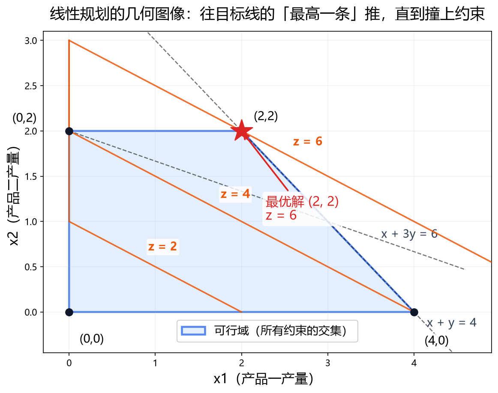
线性规划的几何图像：把所有约束画成半平面，交出来的那块就是可行域；
目标函数是一族平行线，往「值最大」的那条推，撞上约束的地方就是最优解。注意最优解几乎总是落在顶点上 ——这就是 LP 求解器（单纯形法）跑得飞快的几何原因。
LP 的三个「天然性质」，直接决定你该怎么检验它
① 可行域是凸的 → 最优解唯一或是一整条边/面上的多个点；② 最优解在顶点 → 解对不对，看它是不是约束的交点；③ 解对系数线性敏感 → 改了参数，解的变化是分段线性的 → 天然能做灵敏度分析。
怎么在纸上建这个模型（通用套路）
① 列一张变量表 ：名字、含义、单位、取值范围；目标 ：要最大还是最小，单位是什么（钱？时间？吨？）；约束 ，每条后面注明「现实依据」——
写不出依据的约束，要么删掉，要么你还没想清楚 ；
例 题
例 1.4 捷运公司仓库租赁问题（第 1 章）
题干： 捷运公司要在 1~4 月租用仓库堆放物资。各月所需面积已知
（15、10、20、12，单位 100m²）；仓库租借费用随合同期变长而打折——
租期 1/2/3/4 个月，每 100m² 的月租为 2800 / 4500 / 6000 / 7300 元。
合同每月初可签若干份（面积与期限可不同），5 月起不再需要仓库。
求使总租借费用最小的签约方案。
设 x_ij = 第 i 个月初签订的、租期 j 个月的仓库面积（100m²）
min z = 2800(x11+x21+x31+x41) + 4500(x12+x22+x32) + 6000(x13+x23) + 7300 x14
s.t. 第 1 月：x11+x12+x13+x14 >= 15
第 2 月：x12+x13+x14+x21+x22+x23 >= 10
第 3 月：x13+x14+x22+x23+x31+x32 >= 20
第 4 月：x14+x23+x32+x41 >= 12
x_ij >= 0
注意「在租面积」= 当月新签的 + 之前签的尚未到期 部分；
x33/x34/x42/x43/x44 恒为 0（这些合同会跨到 5 月，而 5 月不需要仓库）。
书中答案： x₁₁=3, x₃₁=8, x₁₄=12，其余为 0，最优值 z = 118 400 元 。
注意多重最优解 ——求解器可能给出另一组解，但成本同样是 118 400。
落地到 Python：三件事
# scipy 的 linprog 只做最小化；不等式只接受 ≤
from scipy.optimize import linprog
res = linprog(c, A_ub=A, b_ub=b, A_eq=Beq, b_eq=beq, bounds=[(0,None)]*n)
要最大化，先把目标取负 （封装里加个 maximize=True 就别手改）。模型的 ≥ 约束整体乘 −1 变成 ≤。这是最容易错、报错又最迷惑的地方。多重最优解是常态 ：例 1.4 仓库租赁，书中方案与求解器方案不同，但成本都是 118400。
检验要看目标值和可行性，不要逐元素比对解向量。
2 / 10
什么时候用 目标或约束里出现了 |x|、max、分段函数、乘积……凡是「看起来不像线性」的，先想能不能变过去。
为什么这么重要？ 线性问题有又快又准 的求解器（单纯形法/内点法），
而非线性问题只能靠局部方法，慢且可能给错答案。
能线性化就线性化，永远是首选。
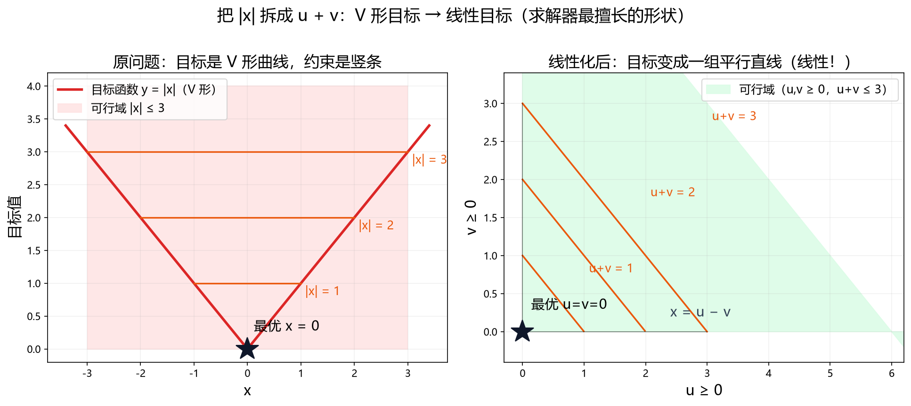
左：原问题的目标是 V 形曲线，等高线是一段段折线，最优解在「尖底」；
右：把 x 拆成 u−v（u,v ≥ 0）后，目标 u+v 的等高线变成一组平行直线 ，可行域也变成了一个多边形。V 形目标 → 线性目标。 这不是数学游戏，而是把问题交给求解器的正确姿势。
三招及其适用条件
招式 怎么做 注意 绝对值 x = u − v（u,v ≥ 0），则 |x| = u + v
u、v 的非负约束绝不能漏 。漏了不会报错，会静悄悄给出目标值 0 的错答案 目标里的 max min maxi |εi | → 引入 v，约束 −v ≤ εi ≤ v
只把真正该自由的量设成变量。例 1.8 里 ε 是给定的；若把 x 也放开，求解器会让 x=y 使 v=0 分段函数 按段拆开，段之间用 0-1 变量切换（这就把整数规划引进来了）
段数越多越贵，段数 > 3 就要考虑别的办法
例 题
例 1.7 / 例 1.8 两个用来练手的线性化算例（第 1 章）
例 1.7 题干： 求 min |x1| + 2|x2| + 3|x3| + 4|x4|，约束为三条线性不等式。
s.t. x1 - x2 - x3 + x4 <= -2
x1 - x2 + x3 - 3x4 <= -1
x1 - x2 - 2x3 + 3x4 <= -0.5
例 1.8 题干： 已知 y 与 x 的各分量，求 min max_i |eps_i|，
其中 eps_i = x_i - y_i 是已给定的量 （不是待决策量）。
书中答案： 例 1.7 最优 x = (−2, 0, 0, 0)，z = 2 ；
例 1.8 只需对 v 这一个变量求解。
线性化的判断顺序（贴在显示器边上）
能线性化 → 线性化 （快、准、唯一、能做灵敏度）；
不能 → 判断是否凸 （凸的话通用 NLP 求解器也够用）；
又不能又不是凸 → 多起点 + 独立验证 （第 5 招）。
例 题
例 3.2 彩电定价问题（第 3 章 · 建模五步法的完整示范）
题干： 某厂同时生产 19 英寸与 21 英寸两种彩电。零售价 339 / 399 美元，
成本 195 / 225 美元，固定成本 400 000 美元。市场规律：每多卖一台，
同型号的均价下降 1 美分 ；交叉影响——每卖一台 21 英寸，19 英寸均价降 0.3 美分，
每卖一台 19 英寸，21 英寸均价降 0.4 美分。
问：两种彩电各生产多少台，才能使年利润最大？
书中答案： x₁ = 4735 台（19″），x₂ = 7043 台（21″），
年利润 553 641.025 美元 ；19″ 均价 270.52 美元，21″ 均价 309.63 美元。
接着上面的题干：把利润写成 x 的函数
售价随销量下降、两种产品互相影响，利润函数是
f = −0.01 x1 ² − 0.007 x1 x2 − 0.01 x2 ² + 144 x1 + 174 x2 − 400 000
这个线性化不了——但它的
Hessian 是 [[−0.02, −0.007], [−0.007, −0.02]]，特征值 −0.027、−0.013（负定），
所以目标函数是【严格凹】的 。无约束下严格凹函数的最大点
唯一 ，直接令 ∇f = 0 就能解析求解：
x* = (4735.04, 7042.74)，f* = 553 641（与书一致，误差 1.2×10⁻⁹）。
这里有个容易混的点
「凹」不是「非凸」的反义词。 求最大化 时，凹目标恰好是好消息：
凹函数求最大 ≡ 负的凹函数求最小 = 凸问题。最小化看 Hessian 正定，最大化看负定 （见武器四）。
线性化不是万能药，但它是遇到非线性时的第一反应。
3 / 10
什么时候用 人、厂、设备、班次、选不选——决策量本身必须是整数。
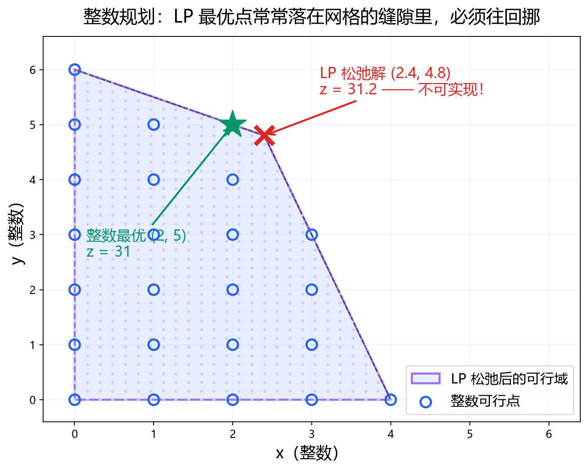
先忽略整数约束解一次 LP（松弛解 ），最优点常常落在网格缝隙里：x=2.4 台机器、y=4.8 个人——现实里根本不存在。
整数规划要在附近的格点里挑最好的（这里是 (2,5)）。由此得到一个实用技巧：先把 integrality 全关掉跑一次 LP，如果它恰好是整数，那它就是整数规划的最优解，可以直接收工。
求解器怎么干活：分支定界
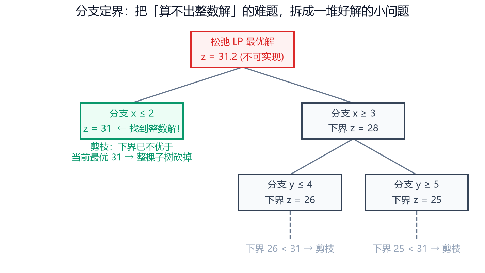
「算不出整数解」是难点，分支定界的办法是：把它拆成一堆好解的小问题 。
松弛解不满足整数约束，就加一条「x ≤ 2」或「x ≥ 3」把它切成两半，各解一次；
每支都给一个下界 （这半边最好的可能值）；下界已经不优于当前最优解的，整棵子树直接砍掉。
例 题
例 2.5 生产线工人排班问题（第 2 章）
题干： 一条生产线 24 小时不间断运转，划分为 6 个 4 小时班次，
各班次需要的最少工人数为 35 / 40 / 50 / 45 / 55 / 30。
每名工人连续工作 8 小时 （即跨两个班次），只能在某个班次开始时报到。
问：至少需要多少名工人？
设 x_i = 在第 i 个班次报到的工人数
min z = x1 + x2 + x3 + x4 + x5 + x6
s.t. x1+x6 >= 35 (0:00~4:00 由第 1、6 班次的人覆盖)
x1+x2 >= 40
x2+x3 >= 50
x3+x4 >= 45
x4+x5 >= 55
x5+x6 >= 30
x_i >= 0 且为整数
书中答案： x = (35, 5, 45, 0, 55, 0)，z = 140 人 。
什么时候用精确方法
变量几十个以内、目标是线性的、需要证明最优 。scipy.optimize.milp（HiGHS 分支定界），能混合整数与连续变量。
什么时候用随机方法
变量上百个、目标非线性、能接受「大概最优」 。
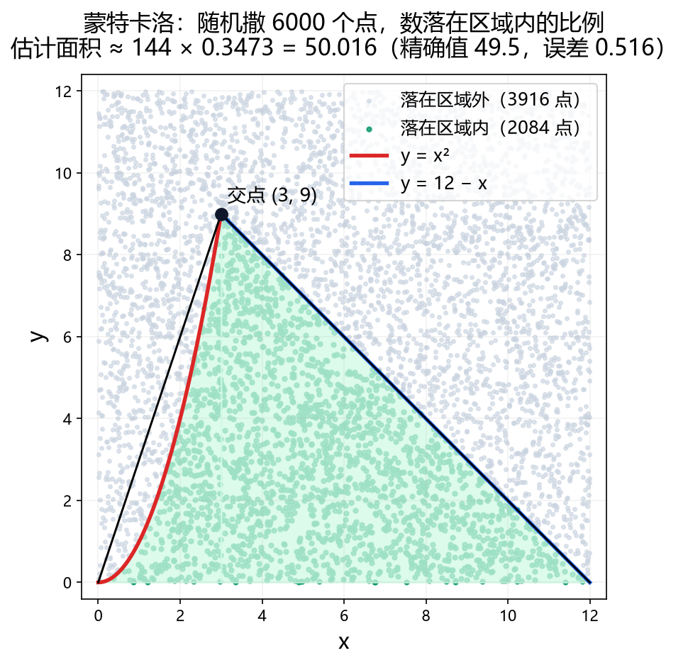
蒙特卡洛：不列方程，改成「随机撒点、数比例」。用于求面积或给整数规划当初值。
精度规律：误差 ~ 1/√N ——样本量翻 100 倍，误差只缩小 10 倍。便宜、稳健，但收敛慢。
例 题
例 2.9 非线性整数规划（第 2 章 · 精确枚举不可能的题）
max z = x1² + x2² + 3x3² + 4x4² + 2x5² - 8x1 - 2x2 - 3x3 - x4 - 2x5
s.t. 0 <= x_i <= 99，x_i 为整数
x1+x2+x3+x4+x5 <= 400
x1+2x2+2x3+x4+6x5 <= 800
2x1+x2+6x3 <= 200
x3+x4+5x5 <= 200
5 个变量各取 0~99，精确枚举要算 100⁵ = 10¹⁰ 个点——不可能。
这正是「蒙特卡洛 + 局部搜索」的用武之地。
书中答案： 蒙特卡洛（10⁶ 采样）得 z = 50 273；
Lingo 精确全局最优 x = (50, 99, 0, 99, 20)，z = 51 568 。
组合拳（工程里实测最有效）
蒙特卡洛全局撒网 → 局部搜索在好解附近精修 → 多次重启 → 有条件再用 milp 校验。精确复现了 Lingo 的最优解 51568 （10 次重启 9 次命中）。
关键细节： 爬山邻域要设计成「单变量 ±1 + 两变量联动 ±1」。
只做单变量会卡在 50898——因为约束把变量耦合了，从 (49,96,1) 走到 (50,99,0) 必须同时动两个变量。
4 / 10
4
武器四：凸性 —— 决定「一个解」还是「一堆解」 什么时候用 目标或约束含平方、乘积、三角函数——也就是线性化不了的时候。
先说清一个口径
下面的「碗 / 山地」是最小化 问题的画面。求最大化 时画面上下颠倒：
倒扣的碗 （凹）才是好情形——详见本页后面的判据表。
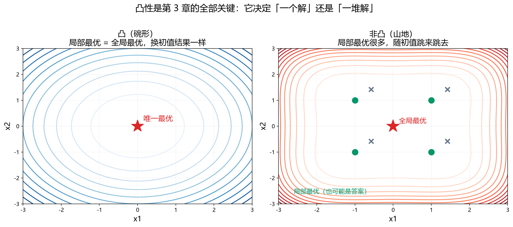
左：目标曲面像碗 （凸）——不管从哪个点出发往下滚，最后都停在同一个碗底。
右：像起伏山地 （非凸）——到处是坑，随初值不同停在不同的坑里，有的坑还不是最深的那个。
凸问题（碗）
✓ 任何初值收敛到同一个 解可以证明 ）充要 条件
非凸问题（山地）
✗ 解依赖初值 多起点 + 独立验证
怎么判断凸不凸（判据要看方向）
你要做的事 目标函数的 Hessian 结论 最小化 f(x)半正定（特征值全 ≥ 0）
凸 / 严格凸 → 凸问题 ，解唯一 最大化 f(x)半负定（特征值全 ≤ 0）
凹 / 严格凹 → 仍是凸问题 （凹求最大 ≡ 负凹求最小），解唯一
为什么求最大值时「凹」反而是好事
最大化凹函数 f，等价于最小化 −f，而 −f 是凸 的。
所以「凹」和「非凸」根本不是反义词 ——判凸性看的是「问题」，不是「目标长得好不好看」。
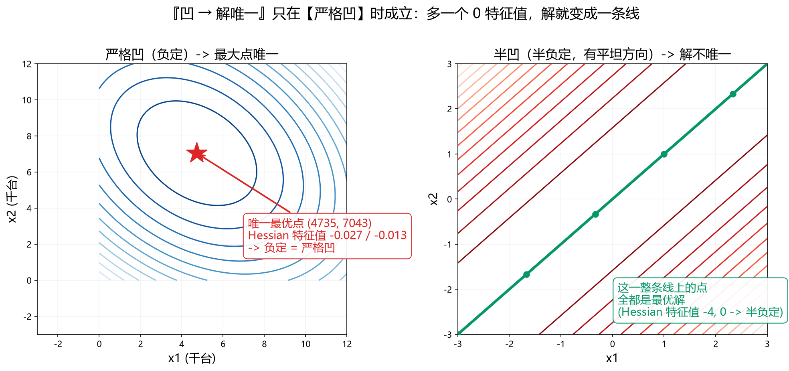
「凹 ⇒ 解唯一」只在严格凹 时成立。左：例 3.2 的利润函数，Hessian 特征值 −0.027、−0.013，
负定 → 唯一最优点；右：f = −(x−y)²，特征值 −4 和 0 ，半负定 → 出现一个「平坦方向」，
整条对角线上的点全都是最优解 。多出一个 0 特征值，解就从「一个点」变成「一条线」。
二阶可微时 ：算目标函数的 Hessian 矩阵，看特征值 。
np.linalg.eigvalsh(H) 一行搞定。工程里的例子 （完整题干见武器二 ）：例 3.2 的 H = [[−0.02,−0.007],[−0.007,−0.02]]，特征值 −0.027、−0.013
⇒ 严格凹 ⇒ 无约束下最大点唯一。实测 200 个随机初值，目标值 的散布只有 0.11（相对 2×10⁻⁷），
解的坐标有 ±5 的抖动纯粹是函数太平坦（曲率仅 0.013）导致优化器提前停下，不是多解 。判断不出来怎么办 ：多起点跑 + 看结果是否一致 + 用 K-T 验算（武器五）。
非凸问题的标准工作流（照做即可）
① 构造几个物理上合理的初值 （不是随机数！比如「让某架飞机不动」「让料场落在工地上」）；逐个检查可行性 （求解器说成功 ≠ 可行）；报告结果对初值的敏感性 ；不依赖求解器 的办法独立复核（消元、穷举小规模、仿真）。
例 题
例 3.9 供应与选址：两个料场供应 6 个工地（第 3 章）
题干： 6 个建筑工地的位置与水泥日用量如下。拟建 2 个料场 ，
每个料场日储量 20 t。料场建在何处，才能使总的吨千米数最小？
工地 位置 (a, b) 日用量
1 (1.25, 1.25) 3 t
2 (8.75, 0.75) 5 t
3 (0.50, 4.75) 4 t
4 (3.75, 5.00) 7 t
5 (3.00, 6.50) 6 t
6 (7.25, 7.75) 11 t
总需求 36 t（两个料场各 20 t，恰好够）
设料场 j 的位置为 (x_j, y_j)，从料场 j 运到工地 i 的量为 z_ij
min sum_i sum_j z_ij * sqrt((x_j-a_i)^2 + (y_j-b_i)^2)
s.t. sum_j z_ij = c_i (每个工地的需求必须满足)
sum_i z_ij <= 20 (每个料场的储量上限)
z_ij >= 0
料场位置是连续变量 （不是整数规划）；但目标对 (x,y) 非凹，
所以是局部方法，必须多起点。
书中答案： 料场 (7.25, 7.75) 与 (3.2942, 5.1790)，
总吨千米 72.6303；按「每工地由一个料场供」的调整方案为 71.9372。
工程里的实测（例 3.9 两料场选址）
12 个随机初值全部 收敛到同一个解（总吨千米 71.9352），
而书上给的那个 72.6303 是局部最优 ——它的运料方案里多个工地被两个料场分供（工地1：料场1 给 0.0329、料场2 给 2.9671）。
这不是书错了，是随机初值不够好时就会发生的事。
5 / 10
什么时候用 结果要拿去说服人（老板、评委、审稿人）的时候。
求解器返回「收敛成功」，只说明它自己觉得 找到了驻点。
在凸问题上，有一个严格的判据能证明 你找到的就是全局最优——K-T 条件 。
∇f(x*) + Σ λi ∇gi (x*) = 0 (平稳性)i ≥ 0， λi · gi (x*) = 0 (互补松弛)i (x*) ≤ 0， x* ≥ 0 (可行性)
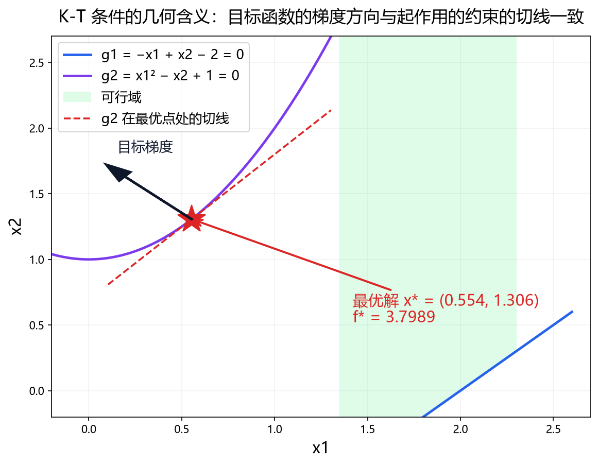
K-T 条件的几何图像：在最优点处，目标函数的梯度方向 必须与起作用的约束 （这里只有 g₂）的切线方向一致。
如果某条约束不起作用（λ = 0），它就不该在图上画切线。充要 的 → 验算通过，就等于证明了「这是全局最优解」。
例 题
例 3.1 一个凸非线性规划问题（第 3 章）
min f(x) = x1² + x2² - 4x1 + 4
s.t. g1(x) = -x1 + x2 - 2 <= 0
g2(x) = x1² - x2 + 1 <= 0
x1, x2 >= 0
书中答案： x* = (0.5536, 1.3064)，f(x*) = 3.7989 。
工程里的实测（例 3.1 凸 NLP）
求解器给 x* = (0.5536, 1.3064)，f* = 3.7989（与书一致）。平稳性 残差 1.4×10⁻⁹、
互补松弛 λ = 2.6129 ≥ 0 且 λ·g = 1.7×10⁻¹⁰、
可行性 只有 g₂ 起作用。全部通过 ✅
「独立复核」的四种手段（从弱到强）
① 换初值再跑一遍 （结果一样 → 大概率对）② 换算法重算 （LP 松弛 vs IP；解析解 vs 数值解）③ 手算 / 穷举小规模 （工程里例 1.4 就是把书上的方案拿回来自己验证可行性和成本）④ 仿真 / 几何还原 （最硬，见武器七）注意：只有「独立于求解器」的复核才有意义。 再跑一次同一个求解器不叫复核。
一个反直觉但重要的事实
在凸 问题上，K-T 条件是充要的 → 验算它比「多跑几个初值」硬得多。非凸 问题上，K-T 只是必要条件 → 验算通过也只说明「是个局部最优」。
所以先花五分钟判断凸不凸，往往比多跑一百次求解器更省事。
6 / 10
什么时候用 永远。答案如果只在某个参数取一个值时成立，那它其实没有答案。
现实里的数据从来不精确。价格弹性可能是 0.006 也可能是 0.02，风险上限可能估错了 10%。
灵敏度分析回答的是：「我的结论对参数有多敏感？」 这是把「一个数」变成「一个决策依据」的关键一步。
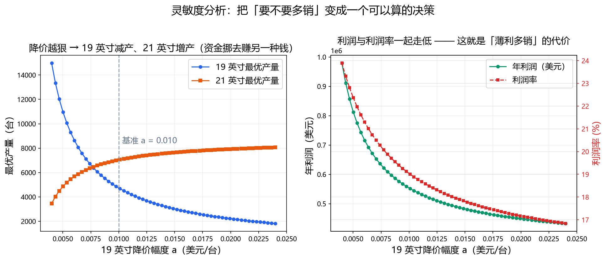
彩电定价的真实灵敏度曲线（19 英寸每多卖一台降 a 美元）。减产 、21 英寸增产 ——钱挪去赚另一种钱；
右：利润和利润率一起 走低。模型于是替你回答了一个商业问题：「要不要多销？」
例 题
例 1.9 投资的收益与风险（1998 全国数学建模竞赛 A 题）
题干： 市场上有 4 种风险资产与银行存款可用，各资产的平均收益率 ri 、
风险损失率 qi 、交易费率 pi 和「按 ui 计价」的阈值 ui 已知。
资金 M 相当大，要求：净收益尽可能大，同时总体风险尽可能小 。
资产 收益率 r 风险率 q 费率 p 阈值 u
银行存款 0.05 0.000 0.000 0
S1 0.28 0.025 0.010 103
S2 0.21 0.015 0.020 198
S3 0.23 0.055 0.045 52
S4 0.25 0.026 0.065 40
建模关键： ① 总体风险用「所投资产中最大的风险」度量 maxi qi xi ，
这是个 max —— 引入变量才能线性化；② 交易费是分段函数，因 ui 相对 M 很小，
净收益可近似为 (ri − pi )xi ；
③ 这是双目标 问题：模型一固定风险上限 a 求最大收益，
模型二固定盈利水平 k 求最小风险，模型三把两者按权重 w 加权求和（仍需线性化）。
书中答案： 模型一在 a ≈ 0.006 附近出现转折，Q ≈ 2019；
模型三 w ≤ 0.7 时收益 2673.27、风险 247.52，w = 1.0 时全存银行（收益 500、风险 0）。
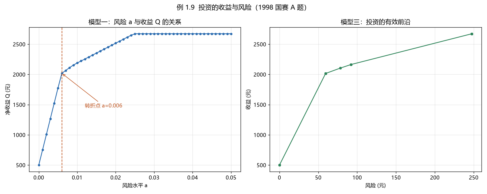
风险—收益曲线（例 1.9，1998 国赛 A 题）。读法 ：不是看「哪个点最好」，而是看哪一段性价比最高 ——
风险从 247 降到 59（降 76%），收益只从 2673 降到 2016（降 25%），这一段就是「买保险」最划算的地方。
三种常见的灵敏度形式
形式 怎么做 读出什么 参数扫描 让某个参数从 a 扫到 b，每个值解一次 LP/NLP 「降价更狠还赚不赚？」——本图的两个例子 目标扫描 反过来固定一个目标值（如收益 ≥ 0.15），求另一个的最优 「想要收益 15%，最少得承担多少风险？」 有效前沿 用权重 w 把两个目标合成一个，w 从 0 扫到 1 所有「不亏」的组合的边界——决策者自己挑
灵敏度分析的两种交付形式
① 一张表 （参数 → 目标值），适合放进报告；② 一条曲线 ，适合让人一眼看出「转折点在哪」——转折点就是决策点 。
彩电定价里 a = 0.010 附近是转折；投资组合里风险 59–92 之间是转折。
别忘了「模型假设的敏感性」
上面所有分析都在同一个模型假设 下变参数。还有一类更重要的问题：
如果模型的假设本身错了怎么办？ （比如「售价随销量线性下降」在极端销量下显然不成立）
→ 这时要回到第 1 步改模型，而不是做灵敏度分析。
7 / 10
7
武器七：验证 —— 模型解出来 ≠ 事情解决了 什么时候用 永远，尤其是结论「看起来不太对劲」的时候。
例 题
例 3.10 飞行管理避免碰撞（1995 全国数学建模竞赛 A 题）
题干： 边长 160 km 的正方形空域内若干架飞机水平飞行，速度均为 800 km/h。
一架飞机进入区域边缘时，需要立即判断是否会与区域内飞机碰撞；
若会碰撞，要计算各机（含新进入的那架）方向角的调整量，使调整幅度尽量小 。
已知条件：
(1) 两机距离始终大于 8 km
(2) 方向角调整不超过 30°
(3) 速度 800 km/h
(4) 新进入飞机进入时距区域内飞机 60 km 以上
(5) 最多 6 架
(6) 不考虑飞出区域后
当空域内的飞行记录（位置单位 km，方向角单位 °）：
飞机 1 (150, 140) 243.0 飞机 4 (145, 50) 159.0
飞机 2 ( 85, 85) 236.0 飞机 5 (130, 150) 230.0
飞机 3 (150, 155) 220.5 新进入 ( 0, 0) 52.0
书中答案： Δθ₅ = 2.7979°、Δθ₆ = 0.9330°，总调整角 3.7310°。
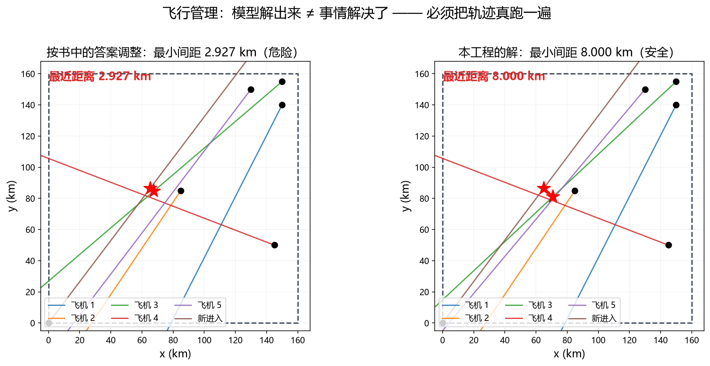
飞行管理（1995 国赛 A 题）。左：按书上的答案 调整后，两架机在 (75, 85) 附近直接穿过 ，最小间距 2.927 km（远小于 8 km 的安全线）；
右：本工程的解，两机刚好擦过 8.000 km。这个差别只有把轨迹真跑一遍才看得出来。
三层验证，逐层加码
第 1 层 · 代回约束 ——把解代回每一条约束，逐条检查有没有违反。
（书上的例 3.10 就在这一层露馅：机对 (3, 新进入) 的 |β+s| = 0.777° < α = 2.125°，不满足。）第 2 层 · 独立复算 ——换算法、换初值、手算小规模、用别的公式重算一遍。第 3 层 · 仿真 / 还原成现实 ——把解放进时间轴、放进地图、放进生产线，看它到底长什么样。
仿真为什么是最硬的验证
仿真不依赖模型本身，它只是按模型的解去执行 。
模型说「这样调完就不撞了」，仿真把六架机按调完的方向飞一遍，
最小间距 8.000 km——这就是现实 ，不是推论。说明它在自己的约束下就是错的 ，不只是「不太理想」。
验证的真正意义：它是唯一能发现「书错了 / 老板错了 / 我错了」的手段
工程里最有价值的三个发现，全部来自验证，而不是来自跑求解器：① 例 3.10 ：书上的标准答案不可行（仿真 2.927 km）。② 例 3.9 ：书上的连续解是局部最优（多起点得到更好的 71.9352）。③ 例 2.9 ：书里的 Matlab 代码 `sum(z)<=20` 是笔误（总需求 36，那样必然不可行）。而这三个 bug 全部「不报错」——求解器都给出了一个数。
一个容易被忽略的点：不报错 ≠ 对
静默出错的典型原因 表现 漏写变量的非负/上下界 目标值跑到 −10¹⁵，或解出负产量 不等式方向写反 模型 infeasible（至少会报错，属于好的失败） 单位重复换算 4 度变成 229 度 解析梯度漏了因子 求解器立刻罢工（会报错） 约束写错但恰好可行 最难发现 ：结果看着合理，其实算的是另一个问题
8 / 10
总表：遇到问题按这张表选招
七件武器 + 一张决策表 + 一份陷阱清单。
你遇到的情况 用哪一招 要点 目标是若干项加权和，约束都是「不超过上限」 武器一 · 线性规划
最快最准；解可能在顶点；多重最优解要看目标值 目标/约束里有 |x|、max、分段 武器二 · 线性化
u,v 非负约束不能漏；线性化不了再看凸性 决策量不能切一半（人、厂、班次、选不选） 武器三 · 整数规划
先跑 LP 松弛；变量多 + 目标非线性 → 随机方法 有平方、乘积、三角函数 武器四 · 凸性 → 五 · K-T
先判凸（特征值）；凸 → 单次求解即全局最优 解要拿去说服人 武器五 · 最优性证明
凸问题验 K-T = 严格证明 结论要能指导行动 武器六 · 灵敏度分析
参数扫描 / 目标扫描 / 有效前沿；找转折点 结果看着可疑 / 要交作业 / 要上生产 武器七 · 验证
代回约束 → 独立复算 → 仿真，至少走两层
动手前的七步清单
决策变量是什么？ 名字、含义、单位、类型（连续/整数/0-1）、范围。目标是什么？ max 还是 min？有没有 max 项、绝对值？约束逐条列 ，每条标注「现实依据」——写不出依据的先别写。线性还是非线性？ 能线性化就线性化。是凸的吗？ 非线性就算 Hessian 特征值。非凸必须多起点 + 独立验证。怎么验证？ 先定好验证方案，再动手写代码——别等算完才想怎么验 。灵敏度扫哪几个参数？ 挑 1–2 个最不确定的。
八个坑（本工程全踩过，代码里都留了注释）
① 不等号方向写反 → infeasible，还不说是哪条；② 最大化双重取负 → 目标值符号离谱；③ 变量没给下界 → 目标值跑到 −10¹⁵；④ 等式约束漏了右端项 （写 r·x 而不是 r·x − c）→ 模型不可行；⑤ 解析梯度漏了 1/2 因子 → 方向全错，求解器立刻罢工；⑥ 单位重复换算 → 4 度变成 229 度；⑦ 消元交叉验证时忘了起作用的那个约束 → 得到次优解 (40,60) 而非 (35.37,64.63)；⑧ 信任书上的答案 → 以为对了，其实书错了。
工具速查
线性规划 scipy.optimize.linprog（只最小化；不等式只吃 ≤）
整数/混合整数 scipy.optimize.milp（HiGHS；integrality 标整数）
非线性 minimize(method='SLSQP')（要初值；约束要求 ≥ 0；非凸要多起点）
随机采样 numpy 向量化（误差 ~ 1/√N）
局部搜索 自己写邻域（单变量 + 多变量联动）
凸性 np.linalg.eigvalsh(H)
作图 matplotlib
最后三句
1. 建模不是数学，是翻译。 你的功夫全在翻译上。2. 先想清楚再算。 80% 的错误来自模型建错，而不是求解器算错。3. 永远留一条独立的验证路径。 能代回约束、能手算小规模、能仿真跑一遍——至少一条。
9 / 10
接下来怎么练
方法只有练过才是自己的。
三阶段（每周 1–2 小时即可）
第 1 周 · 跑一遍，看图 ：把 16 个脚本跑一遍，重点看本图这 10 张图怎么生成的 ——
改参数（降价幅度 a、风险上限、工人数），看图怎么变。理解「模型是活的」。第 2 周 · 手推一遍 ：挑 4 道题（例 1.7 线性化、例 2.5 排班、例 3.1 凸 NLP、例 3.10 飞行管理），
遮住代码，用纸写出变量 → 目标 → 约束 → 检查 ，再对照。
写不出来的那一题，就是你需要重读的地方。 第 3 周 · 自己出一道题 ：把生活里的一个真问题建成线性模型
（怎么排通勤、怎么选课、怎么排班）。哪怕很简单。
建模能力是练出来的，不是看会的。
例 题
第 2 周手推的 4 道题（完整题干速查）
例 1.7 线性化算例 （题干见武器二）：min |x1|+2|x2|+3|x3|+4|x4|，
约束 x1−x2−x3+x4 ≤ −2；x1−x2+x3−3x4 ≤ −1；x1−x2−2x3+3x4 ≤ −0.5。
答案 x=(−2,0,0,0)，z=2。
例 2.5 工人排班 （题干见武器三）：6 个 4 小时班次，各需 35/40/50/45/55/30 人，
每人连上 8 小时（跨两班），问至少雇多少人。
答案 x=(35,5,45,0,55,0)，z=140 人。
例 3.1 凸 NLP （题干见武器五）：min x1²+x2²−4x1+4，
s.t. −x1+x2−2 ≤ 0，x1²−x2+1 ≤ 0，x ≥ 0。
答案 x*=(0.5536,1.3064)，f*=3.7989。
例 3.10 飞行管理 （题干见武器七）：160 km 见方空域、800 km/h、
间距须 > 8 km、调整 ≤ 30°，求各机方向角调整量使总幅度最小。
书中给 Δθ5=2.7979°、Δθ6=0.9330°——但它不可行，
正确解是 Δθ3=2.558°、Δθ6=1.072°（最小间距恰好 8.000 km）。
配套材料
材料 位置 16 个例题脚本（运行时自动与书中答案比对） math_modeling_learn/本报告的 10 张图（全部由工程脚本生成） report\make_figs.py → report\figs\重新渲染本报告 python report\render_report.py总览 + Matlab→Python API 对照表 README.md三份章节学习文档（含自测题） 各章目录下的 README.md 一键回归（16 脚本 + 93 项答案比对） python run_all.py原书 EPUB（含封面，4.1 MB） 需自行准备（教材版权原因不随本仓库分发）
第 4 章之后会碰到什么
章节 主题 你会用到前面哪一招 第 4 章 图与网络优化 武器一（0-1）+ 武器三（整数） 第 5 章 微分方程与差分方程 连续/离散建模，稳定性分析 第 6 章 元胞自动机 武器三的随机模拟 第 7 章 Matlab 编程与数据处理 工程能力：数据 → 模型 → 图表 第 8 章 启发式算法（GA / 模拟退火 / 粒子群） 武器三的「随机方法 + 多起点」在这里正式登场
配套工程自检
✅ 16 个脚本全部运行通过 ✅ 93 项与书中答案比对全部一致 ✅ 本报告 10 张图全部由工程脚本生成
10 / 10